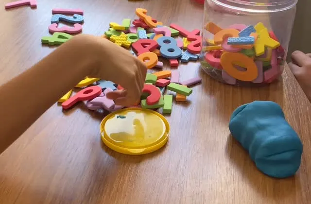

Leve a criança pra conhecer o ambiente antes das aulas começarem.
Psicopedagogia infantil · Jardins, SP
Cada criança aprende do seu jeito.
Avaliação e acompanhamento das dificuldades de aprendizagem com afeto, escuta e muita brincadeira. Pra que aprender volte a ser leve.
Fique atento
Seu filho pode estar precisando de ajuda se…
- 1Demora pra aprender letras e números
- 2Mistura letras ou troca sons ao escrever
- 3Tem dificuldade pra se concentrar
- 4Sente desânimo ou frustração com a escola
Esses sinais não são um diagnóstico. Eles mostram que vale conversar com uma profissional e entender o que está acontecendo.

O brincar também ensina
Não é só lição no papel que importa.
O afeto, a conexão e o lúdico são pilares do desenvolvimento da aprendizagem. É brincando que a criança se sente à vontade pra expressar emoções e desenvolver habilidades cognitivas, sociais e motoras.
Por isso cada sessão alterna momentos de brincadeira e atividades com foco no que a criança precisa desenvolver.
Como funciona
Do primeiro contato ao acompanhamento
- 01
Conversa com a família
Vocês me contam a história da criança, a rotina e o que preocupa.
- 02
Avaliação psicopedagógica
Atividades e brincadeiras pra entender como a criança aprende e onde estão as dificuldades.
- 03
Plano personalizado
Estratégias pensadas pro jeito único de aprender de cada criança.
- 04
Acompanhamento
Sessões semanais e conversas com a família e, quando faz sentido, com a escola.
Pra você usar em casa
Adaptação escolar mais leve
Crie uma rotina clara: horário pra dormir, acordar e se preparar.
Evite despedidas longas. Diga que vai voltar, sorria e saia confiante.
Acolha os sentimentos: "Eu sei que é difícil, mas estou aqui com você."
Combine algo especial pro fim do dia e pergunte qual foi a parte mais divertida.
O tédio também constrói a imaginação.
Quem vai acompanhar seu filho
Oi, eu sou a Victoria.
Sou psicopedagoga e trabalho com crianças que enfrentam desafios na leitura, na escrita e na matemática. Acredito que cada pequeno tem um jeito único de aprender, e meu trabalho é descobrir esse jeito junto com a família.
Atendo nos Jardins, em São Paulo, num espaço pensado pra criança se sentir em casa.
@victoriaoda.pp no Instagram ↗Dúvidas frequentes
Pode perguntar
O que faz uma psicopedagoga?
Investiga como a criança aprende e o que está dificultando esse processo, e cria estratégias pra que ela avance na escola com mais segurança.
A partir de que idade?
O acompanhamento pode começar desde a alfabetização. Na conversa inicial a gente vê se faz sentido pro momento do seu filho.
Preciso de encaminhamento da escola?
Não. Muitas famílias procuram por conta própria ao perceber os sinais. Se a escola já fez alguma observação, ela ajuda muito na avaliação.
Quanto tempo dura o acompanhamento?
Depende de cada criança. Depois da avaliação eu explico o plano e a frequência das sessões.
Vamos conversar sobre o seu filho?
Me chama no WhatsApp e agende a conversa inicial.
Falar com a Victoria no WhatsApp Alameda Jaú, 72 · Jardim Paulista · São Paulo, SPVer no mapa ↗